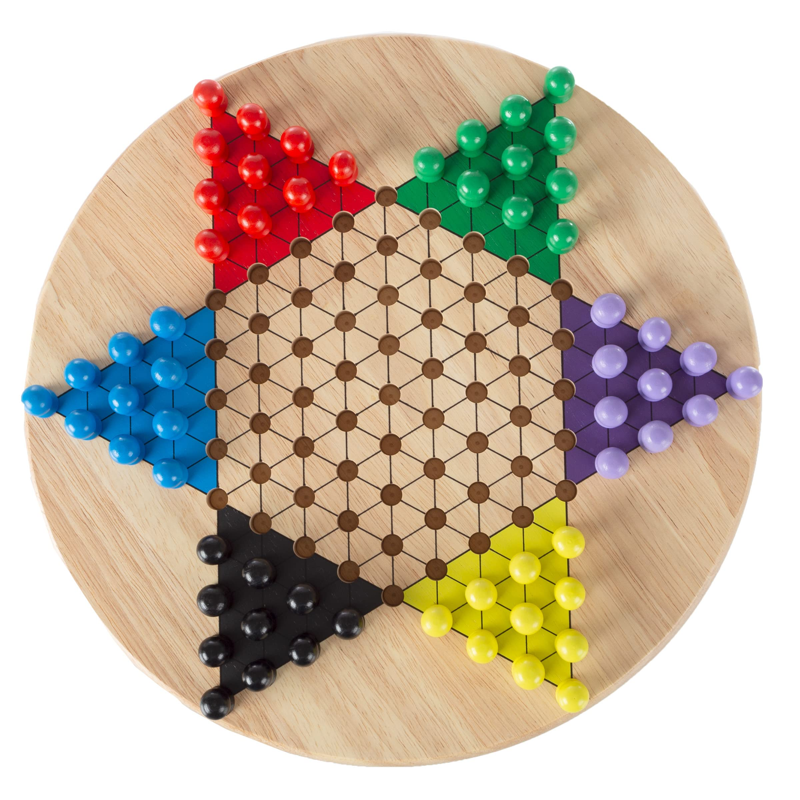

Chinese checkers
Chinese checkers is a strategy board game that can be played by two, three, four, or six people, playing individually or with partners. The objective is to be first to race all of one's pieces across the hexagram-shaped board into "home"—the corner of the star opposite one's starting corner—using single-step moves or moves that jump over other pieces. The remaining players continue the game to establish second- third-, fourth-, fifth-, and last-place finishers.
Our task was to implement the game in a client-server Java application. Code below show implementation of method thad paints the game board in the app window.
public void paint(Graphics g){
Graphics2D g2d = (Graphics2D) g;
g2d.setPaint(passButton.getColor());
g2d.fill(passButton);
for (int i = 0; i < 17; ++i) {
for (int j = 0; j < 25; ++j) {
tempField = map.getField(i, j);
if (tempField.isEnabled()) {
g2d.setPaint(tempField.getColor());
g2d.fill(tempField);
}
}
}
}
Haskell monads

Functional Programming was one of the most interesting courses I took last term. Particularly interesting was the lecture about monads. Code below shows a simple implementation of a point as a monad.
newtype Pkt a = Pkt (a, a)
instance Functor Pkt where
fmap :: (a -> b) -> Pkt a -> Pkt b
fmap f (Pkt (x, y)) = Pkt (f x, f y)
instance Applicative Pkt where
pure :: a -> Pkt a
pure x = Pkt (x, x)
(<*>) :: Pkt (a -> b) -> Pkt a -> Pkt b
Pkt (f, g) <*> Pkt (x, y) = Pkt (f x, g y)
instance Monad Pkt where
return :: a -> Pkt a
return = pure
(>>=) :: Pkt a -> (a -> Pkt b) -> Pkt b
Pkt (x, y) >>= f =
let Pkt (m, _) = f x
Pkt (_, n) = f y
in Pkt (m, n)
Compiler
Simple compiler written as an assignment for subject Formal Languages and Translation Theory. Compiler translates simple language into assembly code. Code sample below generates assembly code for adding two variables.
if instr[2][0] == "ADD":
if instr[2][1][0] == "ID":
self.check_variable(instr[2][1][1])
if instr[2][2][0] == "ID": # ID + ID
self.check_variable(instr[2][2][1])
self.load_variable(instr[2][1][1])
self.add_variable(instr[2][2][1])
elif instr[2][2][0] == "NUM": # ID + NUM
self.code.append(f"SET {instr[2][2][1]}")
self.add_variable(instr[2][1][1])
elif instr[2][1][0] == "NUM":
if instr[2][2][0] == "ID": # NUM + ID
self.check_variable(instr[2][2][1])
self.code.append(f"SET {instr[2][1][1]}")
self.add_variable(instr[2][2][1])
elif instr[2][2][0] == "NUM": # NUM + NUM
self.code.append(
f"SET {instr[2][1][1] + instr[2][2][1]}")